임상심리사-2급 (2015-08-16 기출문제)
1과목: 심리학개론
1. 개를 대상으로 한 Pavlov의 고전적 조건형성 실험에서 조건반응(A)과 무조건 반응(B)에 해당하는 것을 순서대로 바르게 연결한 것은?
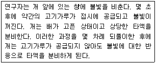
- A - 고기 덩어리 B - 타액분리
- A - 타액분비 B - 타액분비
- A - 불빛 B - 고기 덩어리
- A - 타액분비 B - 불빛
(정답률: 76%)

2. 연구설계에 대한 설명으로 가장 적합한 것은?
- 실험자에 의해 조작되는 변인을 종속변인이라고 한다.
- 실험자의 조작에 의한 피험자의 반응을 독립변인이라고 한다.
- 하나 또는 몇 개의 대상을 집중적으로 조사하여 결론을 얻는 연구방법을 사례연구라고 한다.
- 관찰연구에서는 연구자가 의도한 결과를 생성시키기 위한 처치가 개입된다.
(정답률: 84%)
3. 유전이 성격특질에 미치는 효과를 알아보기 위한 방법으로 가장 적합한 것은?
- 함께 자란 일란성 쌍생아의 비교
- 양육환경이 다른 일란성 쌍생아의 비교
- 함께 자란 이란성 쌍생아의 비교
- 양육환경이 다른 이란성 쌍생아의 비교
(정답률: 84%)
4. Piaget의 인지발달 이론에 대한 비판과 가장 거리가 먼 것은?
- 사회환경의 역할에 대한 과대평가
- 도식(schema)과 행동의 불명확한 연결
- 단계에 따른 질적 차이의 증거 부족
- 성인의 형식적 추론과 구체적 추론의 문제
(정답률: 70%)
5. 인간의 인지과정에 대한 설명으로 옳은 것은?
- 감각기억에서 단기기억으로 넘어가는데 주의가 결정적인 역할을 한다.
- 장기기억은 거의 전적으로 부식에 의해서 망각된다.
- 감각기억의 용량은 단기기억의 용량과 비슷하다.
- 일반적으로 회상보다 재인이 더 어렵다.
(정답률: 69%)
6. 'IB-MKB-SMB-C5.1-68.1-5'배열을 외우기는 힘들지만, 이를 'IBM-KBS-MBC-5.16-8.15'배열로 재구성하면 외우기가 쉬워진다. 이와 같이 정보를 재부호화하여 하나로 묶는 것은?
- 암송
- 부호화
- 청킹(chunking)
- 활동기억
(정답률: 87%)
7. Cattell의 성격이론에 대한 설명과 가장 거리가 먼 것은?
- 주로 요인분석을 사용하여 성격요인을 규명하였다.
- 지능을 성격의 한 요인인 능력특질로 보았다.
- 개인의 특정 행동을 설명할 수 있느냐에 따라 특질을 표면특질과 근원특질로 구분하였다.
- 성격특질이 서열적으로 조직화되어 있다고 보았다.
(정답률: 78%)
8. Kohlberg의 도덕발달이론에 대한 비판과 가장 거리가 먼 것은?
- 도덕적 판단능력과 도덕적 행동의 실천은 별개의 문제이다.
- 6단계에 도달한 사람을 찾아보기가 힘들다.
- 도덕발달단계에서 퇴행이 자주 일어난다.
- 인지발달의 측면을 반영하지 못하고 있다.
(정답률: 63%)
9. 현상학적 성격이론에 대한 설명으로 틀린 것은?
- 사건 자체가 아니라 그 사건에 대한 개인의 주관적 경험이 행동을 결정한다.
- 세계관에 대한 개인의 행동을 예측하고 이해하기 위해서는 개인의 지각을 이해해야 한다.
- 어린 시절의 동기를 분석하기보다는 앞으로 무엇이 발생할 것인가에 초점을 둔다.
- 선택의 자유를 강조하는 인본주의적 입장과 자기실현을 강조하는 자기이론적 입장을 포함한다.
(정답률: 71%)
10. 정신분석 이론에서 방어기제는 어떠한 심리적 특성 때문에 발달하게 되는가?
- 억압
- 우울
- 초월
- 불안
(정답률: 75%)
11. 다음은 어떤 연구방법에 해당하는가?
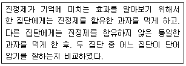
- 조사법
- 실험법
- 자연관찰법
- 사례연구법
(정답률: 93%)
12. 침팬지의 도구사용에서 보듯이 시행착오에 의한 것이 아닌 어느 한 순간에 실무율적으로 일어나는 학습은?
- 연합학습
- 사회학습
- 잠재학습
- 통찰학습
(정답률: 73%)
13. 표본조사에 대한 설명으로 틀린 것은?
- 연구자가 모집단의 모든 성원을 조사할 수 없을 때 표본을 추출한다.
- 모집단의 특성을 일반화하기 위해서 표본은 모집단의 부분집합이어야 한다.
- 표본의 특성을 모집단에 일반화하기 위해서 무선표집을 사용한다.
- 표본추출에서 표본의 크기가 작을수록 표집오차도 줄어든다.
(정답률: 86%)
14. 통계분석법에 대한 설명으로 틀린 것은?
- 2개의 모평균 간에 차이가 있는지를 검정하기 위해서 중다회귀분석(multiple regression analysis)을 이용한다.
- 3개 또는 그 이상의 평균치 사이에 차이가 있는지를 검정하기 위해서 분산분석(analysis of variance)을 사용한다.
- 빈도 차이의 유의성을 검증하기 위해서
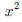
검정을 사용한다. - 피어슨 상관계수
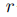
은 근본적으로 관련성을 보여주는 지표이지 어떠한 인과적 요인을 밝혀주지는 않는다.
(정답률: 55%)
15. 밤에 등대불을 깜박거리게 하는 것은 무슨 현상을 방지하기 위한 것인가?
- 자동운동착시 현상
- 파이(Phi) 현상
- 유인운동 현상
- 양안부등 현상
(정답률: 58%)
16. 의미 있는 '0'의 값을 갖는 측정 척도는?
- 명목척도
- 비율척도
- 등간척도
- 서열척도
(정답률: 75%)
17. 다음 사례에서 신자들의 행동을 설명하는데 가장 적합한 개념은?
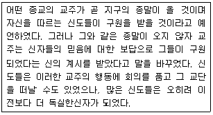
- 복종
- 사회비교
- 인지부조화
- 동조
(정답률: 86%)
18. 성격의 정의에 대한 설명으로 틀린 것은?
- 성격에는 개인이 가지고 있는 고유하고 독특한 성질이 포함된다.
- 개인의 독특성은 시간이 지나도 비교적 안정적으로 변함없이 일관성을 지닌다.
- 성격은 다른 사람이나 환경과 상호 작용하는 관계에서 행동양식을 통해 드러난다.
- 성격은 타고난 것으로 개인이 속한 가정과 사회적 환경에 영향을 받지 않는다.
(정답률: 96%)
19. 망각에 대한 설명으로 틀린 것은?
- 망각은 단기기억과 장기기억에서 모두 일어날 수 있다.
- 시간이 경과함에 따라 이전의 정보를 더 많이 잃어버리는 현상을 쇠퇴라고 한다.
- 망각은 적절한 인출 단서가 없거나 유사한 기억 내용이 간섭을 해서 나타날 수 있다.
- 장기기억에서 망각이 일어나는 주요 이유는 대치와 쇠퇴현상 때문이다.
(정답률: 76%)
20. 인상형성에 대한 설명으로 틀린 것은?
- 타인에 대한 인상은 평가차원을 중심으로 형성된다.
- 어떤 사람에 대해 일단 좋은 사람이라는 인상이 형성되면, 능력도 뛰어나고 똑똑하다는 긍정적인 특성이 있을 것이라고 생각하는 경향을 후광효과라고 한다.
- 일반적으로 타인들이 자기와 비슷하다고 판단하는 경향을 내현성격이론이라고 한다.
- 어떤 사람이 좋은 특성과 나쁜 특성을 똑같이 가지고 있을 때 인상이 중립적이 아니라 나쁜 사람이라는 쪽으로 형성되는 현상을 부적효과라고 한다.
(정답률: 58%)
2과목: 이상심리학
21. DSM-5에서 섬망에 대한 설명으로 옳지 않은 것은?
- 섬망은 단기간에 발생하는 의식장애와 인지변화가 특징이다.
- 핵심증상은 주의 장해와 각성 저하이다.
- 일반적으로 일련의 증상이 급격하게 갑자기 나타나는 경우는 드물다.
- 물질 사용이나 신체적 질병과 같은 다양한 원인에 의해 나타날 수 있다.
(정답률: 70%)
22. 다음은 DSM-5에서 어떤 진단기준의 일부인가?
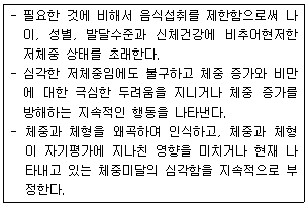
- 신경성 폭식증
- 신경성 식욕부진증
- 폭식장애
- 이식증
(정답률: 87%)
23. 조현병의 음성 증상에 해당하는 것은?
- 정서적 둔마
- 망상
- 환각
- 의존성
(정답률: 78%)
24. 공황장애의 치료방법과 가장 거리가 먼 것은?
- 세로토닌 재흡수 억제제
- 심리교육적 가족치료
- 인지행동 치료
- 공황통제치료
(정답률: 62%)
25. 뇌에서 발견되는 베타 아밀로이드라는 단백질의 존재와 가장 관련이 있는 장애는?
- 파킨슨 질환
- 주요 우울장애
- 정신분열증
- 알츠하이머 질환
(정답률: 72%)
26. 특정 학습장애에 대한 설명과 가장 거리가 먼 것은?
- 학습장애 아동은 정상적인 지능을 가지고 있음에도 불구하고 학습에 어려움을 보인다.
- 학습장애 중에서 읽기장애가 가장 흔하다.
- 학습장애 아동들은 품행장애, ADHD, 우울증을 동반하는 경우가 많다.
- 학습장애 아동은 뇌손상이 없고 인지적 정보처리과정도 정상적이다.
(정답률: 64%)
27. 스트레스 호르몬이라고 불리는 코티솔(cortisol)이 분비되는 곳은?
- 부신
- 대뇌피질
- 변연계
- 해마
(정답률: 75%)
28. DSM-5에서 다음에 해당하는 지적발달장애(Intellectual Developmental Disorder) 수준은?
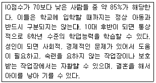
- 가벼운 정도(Mild)
- 중간 정도(Moderate)
- 심한 정도(Severe)
- 아주 심한 정도(Profound)
(정답률: 79%)
29. 반사회성 성격장애의 원인과 가장 거리가 먼 것은?
- 부모의 적대감과 학대
- 변덕스럽고 충동적인 부모의 양육태도
- 신경전달물질인 세로토닌(Serotonin)의 부족
- 붕괴된 자아와 강한 도덕성 발달
(정답률: 77%)
30. 반복적으로 통제 상실에 대한 강렬한 불안이 갑작스럽게 나타나는 불안장애는?
- 공황장애
- 범불안장애
- 공포증
- 급성스트레스장애
(정답률: 77%)
31. 다음 사례에서 가장 가능성이 높은 진단은?
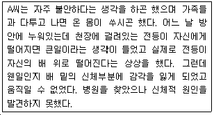
- 건강염려증
- 전환장애
- 신체화장애
- 신체변형장애
(정답률: 74%)
32. 조현병을 설명하는 소인-스트레스이론(diathesis-stress theory)에 대한 설명으로 가장 적합한 것은?
- 소인이 스트레스를 야기한다.
- 스트레스가 소인을 변화시킨다.
- 소인과 스트레스는 서로 억제한다.
- 소인은 스트레스 상황에서 발현된다.
(정답률: 80%)
33. 사회불안장애에 대한 설명으로 가장 적합한 것은?
- 공포스러운 사회적 상황이나 활동상황에 대한 회피, 예기 불안으로 일상생활, 직업 및 사회적 활동에 영향을 받는다.
- 특정 뱀이나 공원, 동물, 주사 등에 공포스러워 한다.
- 터널이나 다리에 대해 공포반응이 일어나는 경우이다.
- 생리학적으로 부교감신경계의 활성 등의 생리적 반응에서 기인한다.
(정답률: 85%)
34. DSM-5의 신경발달장애의 범주에 포함되지 않는 장애는?
- 자폐 스펙트럼 장애
- 의사소통 장애
- 특정 학습장애
- 유분증
(정답률: 76%)
35. DSM-5에서 조증삽화의 진단기준을 만족시키기 위해 필요한 증상이 아닌 것은?
- 팽창된 자존심 또는 심하게 과장된 자신감
- 사고의 단절 또는 주의 산만
- 평소보다 말이 많아지거나 계속 말을 하게 됨
- 목표 지향적 활동이나 흥분된 운동성 활동의 증가
(정답률: 62%)
36. DSM-5의 이인성/비현실감 장애 진단 기준에 해당하지 않는 것은?
- 이인증이나 비현실감을 경험하는 동안 중요한 자서전적 정보를 기억하지 못한다.
- 이인증이나 비현실감을 경험하는 동안 현실검증력은 손상되지 않은 채로 양호하게 유지된다.
- 이러한 증상으로 인해 임상적으로 심각한 고통이나 사회적, 직업적 또는 다른 중요한 기능 영역에서 심한 장해를 초래해야 한다.
- 이인증이나 비현실감이 어떤 물질이나 신체적 질병에 의한 것이 아니어야 한다.
(정답률: 52%)
37. 스스로 독립적인 생활을 하지 못하고 다른 사람에게 과도하게 의존하거나 보호받으려는 행동을 특징적으로 나타내는 성격장애는?
- 분열성 성격장애
- 의존성 성격장애
- 자기애성 성격장애
- 히스테리성 성격장애
(정답률: 86%)
38. Jellinek는 알코올 의존이 단계적으로 발전하는 장애라고 주장하면서 발전과정을 4단계로 구분하였는데 이에 해당하지 않는 것은?
- 전조단계(prodromal phase)
- 전알코올 증상단계(pre-alcoholic phase)
- 만성단계(chronic phase)
- 유도단계(alcohol-induced phase)
(정답률: 64%)
39. DSM-5의 노출장애(exhibitionistic disorder)에 대한 설명과 가장 거리가 먼 것은?
- 성도착적 초점은 낯선 사람에게 성기를 노출시키는 것이다.
- 성기를 노출시켰다는 상상을 하면서 자위행위를 하기도 한다.
- 보통 18세 이전에 발생하며 40세 이후에는 상태가 완화되는 것으로 보인다.
- 노출증적 행동을 나타내는 경우에 대개 낯선 사람과 성행위를 하려고 시도한다.
(정답률: 73%)
40. DSM-5에서 주요 우울장애의 핵심 증상에 포함되지 않는 것은?
- 정신운동성 초조나 지체
- 불면이나 과다수면
- 죽음에 대한 반복적인 생각
- 주기적인 활력의 증가와 감소
(정답률: 78%)
3과목: 심리검사
41. 발달적 선별검사에 대한 설명과 가장 거리가 먼 것은?
- 발달적 선별검사의 주목적은 정상에서 이탈될 위험이 있는 아동을 확인하기 위함이다.
- 베일리(Bayley) 검사는 대표적인 발달검사이다.
- 덴버(Denver) 발달선별검사는 자폐아동을 선별하는데 가장 많이 사용된다.
- 대부분의 발달선별검사에는 아동의 근육운동에 대한 평가가 포함되어 있다.
(정답률: 52%)
42. 신경심리평가에서 종합검사(배터리검사)의 장점은?
- 필요한 특정 인지기능에 대한 집중적 검사가 가능하다.
- 해석과정에서 고도의 전문성이 요구된다.
- 평가되는 기능에 관하여 총체적인 자료를 제공해준다.
- 최신 신경심리학의 발전과 개념을 반영할 수 있다.
(정답률: 79%)
43. K-WAIS-4의 시행 및 채점에 대한 설명으로 틀린 것은?
- 검사자는 검사 시행의 표준절차를 암기하고 익혀 검사요강을 보지 않고도 시행할 수 있을 정도로 익숙해야 한다.
- 검사자는 검사 시행 과정에서 채점원칙을 미리 알고 있어야 하며, 피검사자의 응답이나 반응은 1회로 제한한다.
- 검사 시행 시 피검사자의 행동에 대한 세밀한 관찰은 검사결과를 해석하는데 있어 유용한 자료로 사용된다.
- 검사자는 피검사자가 능력을 c최대한 발휘할 수 있도록 동기를 부여하고 정서적으로 편안한 상태가 되도록 노력한다.
(정답률: 82%)
44. 다음에서 설명하고 있는 타당도는?
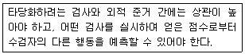
- 준거관련 타당도
- 내용관련 타당도
- 구인타당도
- 수렴 및 변별 타당도
(정답률: 70%)
45. Thorndike가 분류한 지능의 범주에 해당하지 않는 것은?
- 추상적 지능
- 구체적 지능
- 적응적 지능
- 사회적 지능
(정답률: 41%)
46. 심리평가를 위한 일반적인 면담기법에 대한 설명과 가장 거리가 먼 것은?
- 내담자와의 신뢰관계를 구축하는 과정으로 활용될 수도 있다.
- 면담 초반에는 폐쇄형 질문보다는 개방형 질문을 사용한다.
- 내담자의 진술을 구체화하기 위해 그 진술에 대한 근거를 찾아볼 필요가 있다.
- 상담자 스스로 자기개방을 많이 하는 것이 좋다.
(정답률: 74%)
47. 일반지능의 본질로서 일정한 방향을 설정하고 그것을 유지하는 능력, 목표달성을 위해 일하는 능력, 행동의 결과를 수정하는 능력 등 3가지 측면을 언급한 학자는?
- Binet
- Terman
- Wechsler
- Horn
(정답률: 42%)
48. MMPI-2에서 T-점수의 평균과 표준편차는?
- 평균 : 100, 표준편차 : 15
- 평균 : 50, 표준편차 : 15
- 평균 : 100, 표준편차 : 10
- 평균 : 50, 표준편차 : 10
(정답률: 50%)
49. Kaufman 지능검사의 특징과 가장 거리가 먼 것은?
- 언어장애 아동의 지능을 평가하는데 적합하지 않을 수 있다.
- 인지처리과정이론을 토대로 개발된 검사이다.
- 피검사자의 연령 및 발달단계에 따라 다른 하위 검사를 실시한다.
- 좌뇌와 우뇌의 기능을 고루 측정할 수 있다.
(정답률: 59%)
50. 정신지체가 의심되는 6세 6개월 된 아동의 지능 검사로 가장 적합한 것은?
- H-T-P
- BGT-2
- K-WAIS-4
- K-WPPSI
(정답률: 69%)
51. GATB 직업적성검사에서 제시하는 9개의 적성 분야에 해당하지 않는 것은?
- 형태지각
- 사무지각
- 관계지각
- 손의 재치
(정답률: 45%)
52. 다음 환자의 MMPI-2 결과로 가장 가능성이 있는 프로파일 형태는?
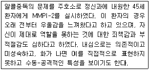
- 2-7
- 1-3
- 2-7-4
- 4-6
(정답률: 59%)
53. 환자에게 를 제대로 실시할 수 있는지 MMPI-2 여부를 확인하기 위하여 알아보아야 할 사항과 가장 거리가 먼 것은?
- 지능수준
- 신체장애
- 연령
- 독해력
(정답률: 73%)
54. 심리검사의 신뢰도에 대한 설명으로 틀린 것은?
- 신뢰도의 최대값은 1.0이다.
- 신뢰도는 검사점수의 일관된 정도를 의미한다.
- 신뢰도는 검사를 한 번 실시해서는 산출할 수 없다.
- 검사의 신뢰도는 검사의 타당도에 영향을 미칠 수 있다.
(정답률: 75%)
55. 뇌손상의 영향에 대한 설명으로 가장 적합한 것은?
- 기억장애가 발생했을 경우 대개는 장기기억보다 최근 기억이 더 손상된다.
- 모든 뇌손상은 실어증을 수반한다.
- 뇌손상이 있는 환자는 복잡한 자극보다는 단순한 자극의 지각에 더 많은 어려움을 겪는다.
- 순수한 형태의 실행증은 뇌손상 환자들에게 가장 대표적으로 발생하는 장애이다
(정답률: 71%)
56. Rorschach 검사의 각 카드별 평범반응이 잘못 짝지어진 것은?
- 카드Ⅰ- 가면
- 카드 Ⅳ - 거인
- 카드 Ⅴ - 나비
- 카드 Ⅵ - 동물의 가죽
(정답률: 68%)
57. MMPI-2의 L척도가 상승했을 때의 해석과 가장 거리가 먼 것은?
- 자신의 동기에 대한 통찰력과는 부적 상관관계에 있다.
- 지능이 높고 교육수준이 높을수록 상승하는 경향이 있다.
- 이상적으로 자신을 나타내고자 하는 경우 상승한다.
- 억압이나 부정 방어기제가 높을수록 상승하는 경향이 있다.
(정답률: 70%)
58. K-WAIS-4의 “기본지식” 소검사가 측정하는 요인과 가장 거리가 먼 것은?
- 연속적 정보처리능력
- 획득된 지식
- 기억
- 정보축적
(정답률: 58%)
59. 전두엽 기능에 관한 신경심리학적 평가영역과 가장 거리가 먼 것은?
- 의욕(volition)
- 계획능력(planning)
- 목적적 행동(purposive action)
- 장기기억능력(long-term memory)
(정답률: 64%)
60. Luria-Nebraska 신경심리 검사항목에 포함되지 않는 척도는?
- 운동
- 리듬
- 집중
- 촉각
(정답률: 46%)
4과목: 임상심리학
61. 심리학적 자문의 예로 틀린 것은?
- 만성질환자의 재활을 위한 프로그램
- 자살예방, 강간 및 폭력 후 위기개입
- 약물치료의 정신적 부작용에 대한 정보
- 청소년 성행동과 아동기 비만의 문제
(정답률: 61%)
62. 전체 지능지수는 평균이나 상식이 부족하고, 다면적 성격검사의 임상척도에서 1번과 3번 척도가 유의하게 상승하여 전환V 형태를 나타내는 내담자에 대한 설명으로 옳은 것은?
- 구체적인 정보습득에 대한 관심이 부족하고 평소 감정적이고 스트레스 상황에서 신체증상이 나타나기 쉽다.
- 타인에 대한 신뢰와 믿음이 매우 부족해서 대인관계에 어려움을 보인다.
- 불안수준이 매우 높아 특정 대상이나 상황에 대한 공포경험이 빈번하기 쉽다.
- 망상, 환각 등의 정신증적 증상이 나타나기 쉽다.
(정답률: 74%)
63. 접수면접에서 초점을 두는 관심사가 아닌 것은?
- 환자의 요구와 임상장면에 대한 기대
- 임상장면의 특징에 대한 소개
- 치료적 동기와 대안적인 치료방법
- 환자의 정신병리에 대한 깊은 이해
(정답률: 67%)
64. 심리평가 결과에 대한 설명으로 옳은 것은?
- 검사결과의 유용성은 평가대상(target)의 기저율(base rate)과는 무관하게 결정된다.
- 정신분열증 유무검사의 경우 일반전집에서 오경보(false positive)의 가능성이 거의 없다.
- 전문가에 의한 임상적 판단은 대개 통계적 판단보다 일관되게 우월하게 나타난다.
- 범주적 진단분류와 차원적 진단분류 중 어느 하나만을 선택할 필요는 없다.
(정답률: 67%)
65. 인지치료에서 강조하는 자동적 자기파괴 인지 중 파국화에 해당하는 것은?
- 나는 성공하거나 실패하거나 둘 중 하나이다.
- 나는 완벽해져야 하고 나약함을 보여서는 안된다.
- 그 프로젝트가 성공하지 못한 것은 나 때문이다.
- 이 일이 잘되지 않으면 다시는 이 일과 같은 일을 할 수 없을 것이다.
(정답률: 78%)
66. Ellis의 합리적 정서치료 A-B-C는 도식을 활용한다. 여기서 A, B, C의 설명으로 가장 적합한 연결은?
- A - 행위
- A - 일치
- B - 신념
- C - 조건
(정답률: 81%)
67. 환자와의 초기면접에서 면접자가 주로 탐색하는 정보의 내용이 아닌 것은?
- 환자의 증상과 주호소, 도움을 요청하게 된 이유
- 최근 환자의 적응기제를 혼란시킨 스트레스 사건의 유무
- 면접과정에서 드러난 고통스런 경험에 대한 이해와 심리적 격려
- 기질적 장애의 가능성 및 의학적 자문의 필요성에 대한 탐색
(정답률: 58%)
68. Boulder 모델에서 제시한 임상심리학자의 주요역할로 가장 적합한 것은?
- 치료, 평가, 자문
- 치료, 평가, 연구
- 치료, 평가, 행정
- 평가, 교육, 행정
(정답률: 72%)
69. 체계적 둔감화에 대한 설명으로 틀린 것은?
- 이 치료기법은 주로 공포증을 가진 성인들을 대상으로 연구되었다.
- 불안을 억제하는 효과가 큰 행동으로 근육이완을 활용한다.
- 환자에게 자신이 두려워하는 상황을 상상하게 한다.
- 대부분의 치료적 장면에서 체계적 둔감화는 단독으로 사용된다.
(정답률: 72%)
70. 인간중심 치료에 대한 설명으로 적합하지 않은 것은?
- 인간 중심 접근은 개인의 독립과 통합을 목표로 삼는다.
- 인간중심적 상담(치료)은 치료과정과 결과에 대한 연구관심사를 포괄하면서 개발되었다.
- 치료자는 주로 내담자의 자기와 세계에 대한 인식에 주로 관심을 가진다.
- 내담자가 정상인인가, 신경증 환자인가, 정신병 환자인가에 따라 각기 다른 치료원리가 적용된다.
(정답률: 74%)
71. 주의력 결핍-과다행동장애(ADHD)는 상황을 종합적으로 분석되고, 목표를 계획하고, 실행하는 기능에 결함을 보인다고 한다. 뇌와 행동과의 관계에서 볼 때 어떤 부위의 결함을 시사하는가?
- 전두엽의 손상
- 측두엽의 손상
- 변연계의 손상
- 해마의 손상
(정답률: 82%)
72. 임상심리클리닉에 설치된 일방거울(one-way mirror)을 통해 결혼생활에 문제가 있는 부부의 대화 및 상호작용을 관찰하여 이들의 의사소통 문제를 평가하였다면 이러한 관찰법은?
- 자연관찰법 (naturalistic observation)
- 유사관찰법 (analogue observation)
- 자기관찰법 (self-monitoring observation)
- 참여관찰법 (participant observation)
(정답률: 66%)
73. 우울 반응을 일으킨 것이 사건 그 자체가 아니라 실패나 거부 혹은 상실에 대한 신념이 핵심 요인이었다고 가정할 때, 가장 적절하게 사례공식화의 근간을 제공하는 모형은?
- S-R 모형
- A-B-C 모형
- ABCDE 모형
- WDEP 모형
(정답률: 68%)
74. Beck의 인지이론에 따르면 다양한 인지오류가 내담자의 문제를 지속시키는 역할을 담당한다고 보고 있다. 이러한 인지 오류에 해당되지 않는 것은?
- 자동적 사고
- 선택적 추상화
- 임의적 추론
- 이분법적 사고
(정답률: 61%)
75. MMPI-2의 타당도 척도 중 자신의 문제를 드러내려 하지 않고 긍정적인 모습을 과장되기 강조하는 피검사자에게서 상승되는 척도는?
- F(P) scale
- S scale
- TRIN scale
- VRIN scale
(정답률: 69%)
76. 건강 태도와 행동을 직접적으로 연결하려는 Ajzen의 계획행동이론에 대한 설명과 가장 거리가 먼 것은?
- 건강 관련 행동은 행동 의도의 직접적인 결과이다.
- 행동 의도는 특정 행동에 대한 태도, 행동에 대한 주관적 규범, 인지된 행동 통제로 구성된다.
- 신념과 행동의 간접적 연결 모델을 제공한다.
- 특정 건강 관련 습관과 관련하여 사람의 의도에 대해 잘 다듬어진 전반적인 설명을 제공한다.
(정답률: 55%)
77. Pennsylvania 대학교에 첫 심리진료소를 개설하고 임상심리학의 탄생에 크게 기여한 학자는?
- William James
- Lightner Witmer
- Emil Kraepelin
- Wilhelm Wundt
(정답률: 82%)
78. 행동치료의 기법 중 고전적 조건형성을 이용한 것은?
- 처벌
- 혐오치료
- 토큰 경제
- 타임 아웃
(정답률: 63%)
79. 뇌의 편측성 효과를 탐색하는 방법은?
- 뇌파검사
- 동물외과술
- 신경심리검사
- 이원청취기법
(정답률: 66%)
80. 정신보건법에서 정한 정신보건 임상심리사의 업무 범위에 포함되지 않는 것은?
- 정신질환자의 사회복귀 촉진을 위한 생활훈련 및 작업훈련
- 정신질환자에 대한 개인력조사 및 사회조사
- 정신질환자에 대한 심리평가
- 정신질환자와 그 가족에 대한 교육ㆍ지도 및 상담
(정답률: 60%)
5과목: 심리상담
81. Beck이 제시하는 인지적 오류 중 '평범하다는 평가를 받는다는 것은 내가 얼마나 부족한지 증명하는 것이다' 라고 생각하는 경우는?
- 전부 아니면 전무의 사고
- 긍정적인 면의 평가절하
- 과장/축소
- 과잉일반화
(정답률: 57%)
82. 스트레스에 영향을 미치는 요인과 가장 거리가 먼 것은?
- 인지적 오류
- 통제소재
- A유형 성격
- 집단무의식
(정답률: 80%)
83. Meichenbaum의 인지행동수정(CBM)에서 행동변화법의 3단계 변화과정에 해당하지 않는 것은?
- 자기 관찰
- 자기 구조화
- 새로운 내적 대화의 시작
- 새로운 기술의 학습
(정답률: 38%)
84. 청소년 비행 중 우발적이고 기회적이어서 일단 발생하면 반복되고 습관화되어 다른 비행행동과 복합되어 나타날 수 있는 것은?
- 약물사용
- 인터넷 중독
- 폭력
- 도벽
(정답률: 76%)
85. 성문제 상담에서 상담자가 지켜야 할 일반적인 지침과 가장 거리가 먼 것은?
- 상담자는 성에 대한 자신의 태도를 자각하고 있어야 한다.
- 내담자가 성에 대한 올바른 지식을 가지고 있음을 전제로 상담을 시작한다.
- 상담 중 내담자와 성에 관하여 개방적인 의사소통을 한다.
- 자신의 한계를 넘어서는 문제는 다른 전문가에게 의뢰한다.
(정답률: 71%)
86. 다음 상담과정에서 사용된 기술은?
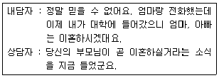
- 재진술
- 통찰
- 감정반영
- 해석
(정답률: 73%)
87. 개인의 성장과 발달뿐만 아니라 성장에 방해요소를 제거시키거나 자기인식에 초점을 두는 집단상담의 유형은?
- 치료집단
- 지도 및 교육집단
- 상담집단
- 구조화집단
(정답률: 49%)
88. 세 자아 간의 갈등으로 인해 야기되는 불안 중 원초아와 초자아 간의 갈등에서 비롯된 불안은?
- 현실 불안
- 신경증적 불안
- 도덕적 불안
- 무의식적 불안
(정답률: 70%)
89. 만성정신질환에 대한 재활모델 단계 중 “핸디캡”의 정의로 가장 알맞은 것은?
- 원인요소에 의한 중추신경계 이상
- 생물학적ㆍ심리학적 구조나 기능에 이상이 있는 것
- 개인이 사회적 상황에서 주어진 역할이나 과제를 수행하지 못하거나 수행하는데 한계를 보이는 것
- 장애 때문에 사회에서 다른 사람에 비해 상대적으로 불이익을 받는 것
(정답률: 76%)
90. Rogers가 제안한 '충분히 기능하는 사람' 의 특성과 가장 거리가 먼 것은?
- 제약이 자유롭다.
- 현재보다는 미래에 투자할 줄 안다.
- 자신의 유기체를 신뢰한다.
- 창조적이다.
(정답률: 71%)
91. 인터넷 중독의 상담전략 중 게임 관련 책자, 쇼핑 책자, 포르노 사진 등 인터넷 사용을 생각하게 되는 단서를 가능한 한 없애는 기법은?
- 자극 통제법
- 정서 조절법
- 공간재활용법
- 인지재구조화법
(정답률: 74%)
92. 약물남용 청소년의 진단 및 평가에 있어서 상담자가 유의해야 할 사항으로 틀린 것은?
- 청소년이 약물을 사용한 경험이 있다는 것만으로 약물남용자로 낙인찍지 않도록 한다.
- 청소년 약물남용과 관련해서 임상적으로 이중진단의 가능성이 높은 심리적 장애는 우울증, 품행장애, 주의결핍-과잉행동 장애, 자살 등이 있다.
- 청소년 약물남용자들은 약물사용 동기나 형태, 신체적 결과 등에서 성인과 다른 양상을 보이므로 DSM-5와 같은 성인 위주 진단체계의 적용에 한계가 있다.
- 가족문제나 학교 부적응 등의 관련요인들의 영향으로 인한 일차적인 약물남용의 문제를 보이는 경우, 상담의 목표도 이에 따라야 한다.
(정답률: 69%)
93. Rogers가 제시한 인간중심 상담에 대한 설명과 가장 거리가 먼 것은?
- 내담자는 불일치 상태에 있고 상처 받기 쉬우며 초조하다.
- 상담자는 내담자와의 관계에서 일치성을 보이며 통합적이다.
- 상담자는 내담자의 내적 참조틀을 바탕으로 한 공감적 이해를 경험하고 내담자에게 자신의 경험을 전달하려고 시도한다.
- 내담자는 의사소통의 과정에서 상담자의 선택적인 긍정적 존중 및 공감적 이해를 지각하고 경험한다.
(정답률: 59%)
94. 타인과의 갈등을 다루는데 유용한 심리치료 방법의 하나로 양쪽에서 갈등이 되는 측면을 완전히 알고 경험하기 위해서 서로가 양쪽의 갈등을 들으며 갈등의 양 측면을 모두 적극적으로 표현할 수 있게 하는 방법은?
- 직면
- 두 의자 기법
- 싸이코 드라마
- 통찰
(정답률: 69%)
95. 집단치료의 준비과정에서 다루어야 할 것과 가장 거리가 먼 것은?
- 집단치료에 대한 오해
- 비현실적인 공포
- 집단에 대한 기대
- 집단 응집력의 제고
(정답률: 46%)
96. 사례관리에 대해 가장 적절하게 정의한 것은?
- 여러 가지 상담사례를 연구하고 관리하는 것이다.
- 사례관리자가 모든 사례관리 대상자의 모든 역할을 혼자서 처리하는 것이다.
- 사례관리는 대상자의 사회생활상에서 여러 가지 욕구를 충족시키기 위해 적절한 사회자원과 연결시키는 절차의 총체를 말한다.
- 사고나 재해 등 단기적인 어려움을 갖고 있는 사람들을 위해 사례관리자가 적절한 사회자원과 연결시키는 절차의 총체를 말한다.
(정답률: 53%)
97. 상담의 일반적인 윤리적 원칙에 해당하지 않는 것은?
- 자율성 (autonomy)
- 무해성 (nonmaleficence)
- 선행 (beneficience)
- 상호성 (mutuality)
(정답률: 66%)
98. 인지행동치료의 기본 가정에 속하지 않는 것은?
- 인지매개가설을 전제로 한다.
- 단기간의 상담을 지향한다.
- 감정과 행동의 이면에 있는 인지를 대상으로만 치료를 시행한다.
- 내담자의 왜곡되고 경직된 생각을 찾아내어 이를 현실적으로 타당한 생각으로 바꾸어 준다.
(정답률: 69%)
99. 진로상담의 목표와 가장 거리가 먼 것은?
- 진로상담은 내담자가 이미 결정한 직업적인 선택과 계획을 확인하는 과정이다.
- 진로상담은 개인의 직업적 목표를 명백히 해주는 과정이다.
- 진로상담은 내담자로 하여금 자아와 직업세계에 대한 구체적인 이해와 새로운 사실을 발견하도록 해준다.
- 진로상담은 직업선택과 직업생활에서 순응적인 태도를 함양하는 과정이다.
(정답률: 74%)
100. 현실치료에서 Glasser가 제시한 8가지 원리에 해당되지 않는 것은?
- 감정보다 행동에 중점을 둔다.
- 현재보다 미래에 추점을 맞춘다.
- 계획을 세워 계획에 따라 실천하겠다는 약속을 다짐받는다.
- 변명은 금물이다.
(정답률: 71%)